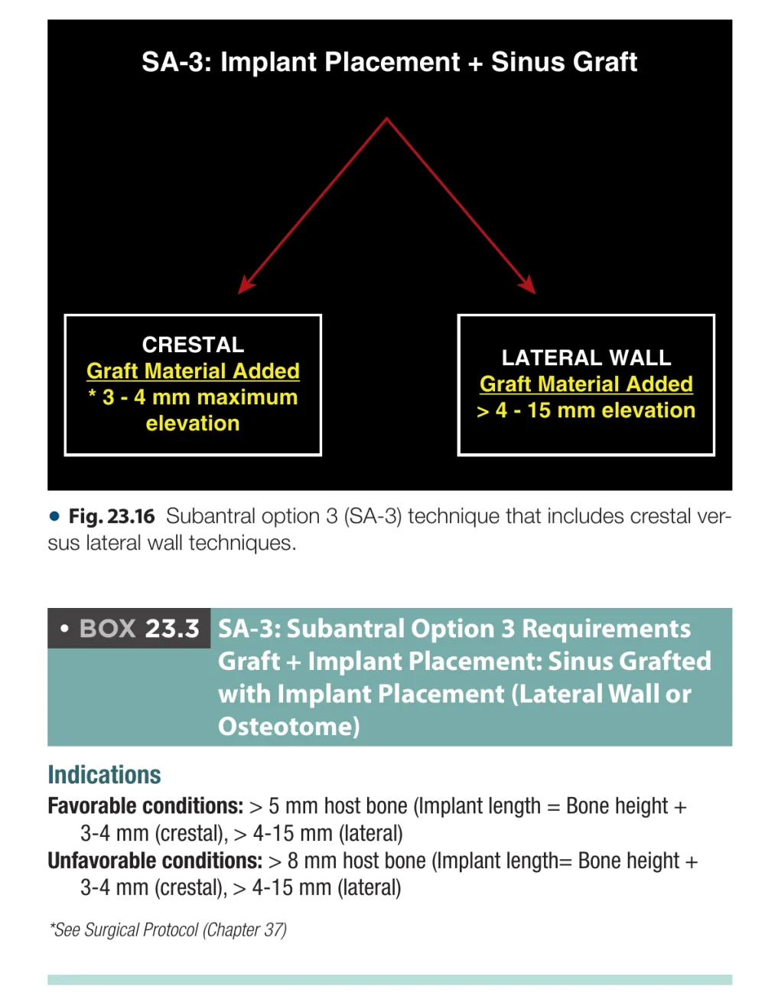
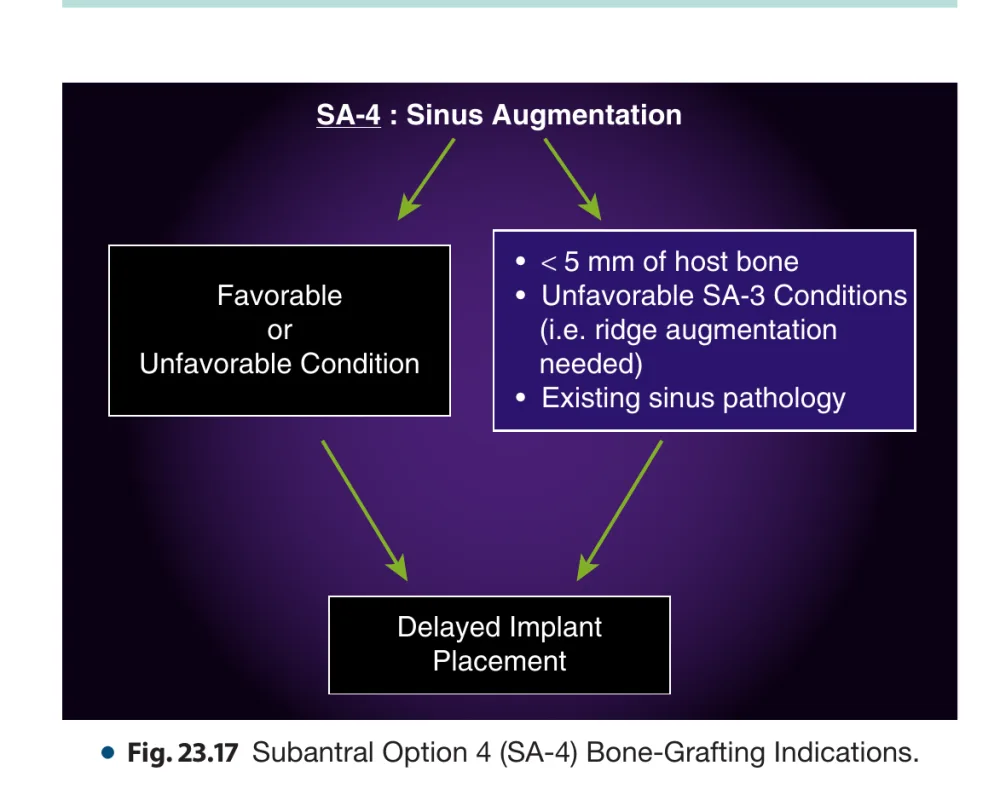

نسخه استخراجشده؛ ترجمه یا تأیید علمی انجام نشده است. وضعیت: captured
SA-3 یعنی: افزایش سینوس بههمراه جایگذاری ایمپلنت در همان جلسه.
و مانند SA-1، اینجا هم یک درخت تصمیم دوشاخه داریم:
SA-3b — شرایط مساعد (D2/D3، عوامل نیروی حداقلی، نسبت C-I مساعد): استخوان میزبان ۵ میلیمتر یا بیشتر
SA-3a — شرایط نامساعد (D4، عوامل نیروی بالا، نسبت C-I افزایشیافته): استخوان میزبان ۸ میلیمتر یا بیشتر
و طول ایمپلنت در هر دو حالت با یک فرمول تعیین میشود:
• رویکرد کرستال: طول ایمپلنت برابر ارتفاع استخوان بهعلاوهی ۳ تا ۴ میلیمتر
• رویکرد جانبی (لترال): طول ایمپلنت برابر ارتفاع استخوان بهعلاوهی ۴ میلیمتر یا بیشتر
و اکنون تفاوت بنیادی میان دو رویکرد — که سقف کارآیی هرکدام را تعیین میکند:
• رویکرد کرستال: «حداکثر ۳ تا ۴ میلیمتر بالا بردن»
• رویکرد دیوارهی جانبی: «بیش از ۴ تا ۱۵ میلیمتر بالا بردن»
این دو عدد را کنار هم بگذار و ببین چه چیزی روشن میشود:
رویکرد کرستال یک سقف سخت دارد. اگر به بیش از ۴ میلیمتر ارتفاع نیاز داری، هیچ مهارتی رویکرد کرستال را کافی نمیکند — باید به دیوارهی جانبی بروی.
و همین است که SA-2 را از SA-3 جدا میکند: SA-2 کف را ۱ تا ۲ میلیمتر بالا میبرد (مخاط حداکثر تا ۳ میلیمتر) و گرافتی در کار نیست؛ SA-3 کرستال تا ۴ میلیمتر با گرافت؛ و SA-3 جانبی تا ۱۵ میلیمتر.
تکنیک دیوارهی جانبی:
«یک استئوتومی از دیوارهی جانبی ماگزیلا انجام میشود تا اجازهی جایگذاری گرافت استخوان پیش از قرار دادن ایمپلنت را بدهد. این یک پنجرهی دسترسی جانبی ایجاد میکند که غشای سینوس را نمایان میکند و اجازه میدهد پنجره به سمت داخل و بالا در موقعیتی فوقانی چرخانده شود.»
به این جمله دقت کن — پنجره برداشته نمیشود؛ چرخانده میشود و به سقف جدید حفرهی گرافت تبدیل میشود.
و شرط جایگذاری همزمان: «تا زمانی که عرض کافی وجود دارد، ایمپلنت ممکن است همزمان و پس از تکمیل گرافت قرار گیرد.»
پس دو شرط مستقل داری: ارتفاع تعیین میکند SA-3 است یا SA-4؛ و عرض تعیین میکند آیا ایمپلنت همزمان ممکن است.
و قاعده این است: «وقتی عرض اولیهی ریج دیویژن B یا C-w باشد، گرافت با غشا یا گرافت اُنلی همراه با افزایش سینوس یک گزینهی درمانی ممکن است، و معمولاً مورد بهعنوان SA-4 طبقهبندی میشود چون جایگذاری ایمپلنت به تأخیر میافتد.»
یعنی یک ریج باریک میتواند بیماری را که از نظر ارتفاع SA-3 است، به SA-4 منتقل کند.
و انتخاب مادهی گرافت — که یک استدلال ظریف دارد:
«مادهی گرافت انتخابی معمولاً آلوگرافت است، مگر آنکه دسترسی آسان به استخوان اتوژن وجود داشته باشد.»
و دلیلش: «استخوان اتوژن اهمیت کمتری دارد، بهدلیل استخوان میزبان موجود (حداقل ۵ میلیمتر ارتفاع).»
این منطق را نگه دار. استخوان میزبان خودش منبع سلولی و عروقی است — پس هرچه استخوان میزبان بیشتر، نیاز به اتوژن کمتر. و برعکس، همانطور که در SA-4 خواهی دید، هرچه میزبان کمتر، نیاز به اتوژن بیشتر.
و چرا ۵ میلیمتر کف SA-3 است؟
«حداقل ۵ میلیمتر ارتفاع استخوان اولیه در ماگزیلای خلفی SA-3 ممکن است استخوان کورتیکال روی کرست باقیمانده داشته باشد، و استخوان کورتیکالمانند روی کف آنترال اصلی ممکن است ایمپلنتی را که همزمان با گرافت قرار میگیرد تثبیت کند و ثبات اولیهاش را ممکن سازد.»
پس ۵ میلیمتر یک عدد دلبخواهی نیست — حداقلی است که «ثبات اولیه» را ممکن میکند. و ثبات اولیه دقیقاً همان چیزی است که جایگذاری همزمان را مجاز میسازد.
و به دو لایهی کورتیکال در این جمله دقت کن: یکی روی کرست و یکی روی کف آنترال. ایمپلنت میان این دو لایه تثبیت میشود — و در ماگزیلای خلفی که استخوان ترابکولار آن اغلب D4 است، همین دو لایه تکیهگاه اصلی ثبات اولیهاند.

SA-4 یعنی: افزایش سینوس، ترمیم، و سپس جایگذاری ایمپلنت با تأخیر.
و سه اندیکاسیون دارد (شکل ۲۳٫۱۷):
• کمتر از ۵ میلیمتر استخوان میزبان
• شرایط نامساعد SA-3 — یعنی وقتی افزایش عرض ریج هم لازم است
• وجود پاتولوژی سینوس
به مورد سوم دقت کن. این تنها معیاری در کل دستگاه است که هیچ ربطی به ابعاد استخوان ندارد. یک بیمار میتواند ۷ میلیمتر استخوان و شرایط کاملاً مساعد داشته باشد، ولی اگر سینوسش بیمار است، SA-4 میشود.
و دلیل اصلی تأخیر:
«در این شرایط، استخوان عمودی کافی برای جایگذاری قابل پیشبینی ایمپلنت همزمان با گرافت سینوس وجود ندارد، و استخوان گیرندهی کمتری برای عمل کردن بهعنوان بستر عروقی گرافت و برای ثبات اولیه هست.»
دو مسئله در یک جمله: ثبات اولیه (مکانیکی) و بستر عروقی (زیستی). و هر دو به یک چیز برمیگردند: کمبود استخوان میزبان.
و اکنون آناتومی SA-4 — که چند تفاوت مهم با SA-3 دارد:
«پروتکل SA-4 با یک آنتروم بزرگتر و استخوان میزبان حداقلی در نواحی جانبی، قدامی و دیستالی گرافت متناظر است، چون آنتروم عموماً بهشکل تهاجمیتری به این نواحی گسترش یافته.»
و پیامدهایش، که همگی در یک جهتاند:
یکم: «در ماگزیلاهای خلفی SA-4، استخوان اتولوگ کمتری برای برداشت در توبروزیته وجود دارد، که بازسازی استخوان در محل را بیشتر به تأخیر میاندازد.»
دوم: ابعاد بزرگتر — «معمولاً ابعاد مزیوـدیستالی و جانبیـمدیالی بلندتری نشان میدهد.»
و جمعبندی: «بنابراین دیوارههای استخوانی کمتر، بستر عروقی کممساعدتر، استخوان اتولوگ موضعی حداقلی، و حجم گرافت بزرگتر — همگی یک دورهی ترمیم طولانیتر و رویکرد جراحی اندکی متفاوت را الزامی میکنند.»
چهار عامل، همه در یک جهت. و «دیوارههای استخوانی کمتر» را پیشتر دیدهای — پیشبینیپذیری گرافت با شمار دیوارههای در تماس همبستگی دارد.
سوم — و این یک تنگنای دوگانه است:
«ترکیب مواد گرافت و جایگذاری آنها مشابه تکنیک SA-3 است. با این حال، استخوان اتوژن کمتری اغلب از توبروزیته برداشت میشود، پس در برخی موارد ممکن است به محل برداشت افزودهای نیاز باشد، بیشتر اوقات از مندیبل (یعنی از راموس صعودی).»
و دلیلش: «بهدلیل استخوان میزبان بهخطرافتادهی موجود، استخوان اتوژن بیشتری لازم است.»
بیشتر لازم است، کمتر در دسترس است. و همین است که SA-4 را به یک درمان چندمرحلهای و چندمحلی تبدیل میکند.
و اکنون دو خبر خوب — که غافلگیرکنندهاند:
خبر خوب یکم: «معمولاً سپتا یا تیغههای کمتری در سینوس وجود دارد، که عوارض را کاهش میدهد.»
سپتای سینوس دسترسی و دید را محدود میکند و بروز پارگی غشا را بالا میبرد. و در سینوس بزرگشده، این تیغهها کمتر دیده میشوند.
خبر خوب دوم: «بیشتر نواحی SA-4 دسترسی جراحی بهتری از همتایان SA-3 خود فراهم میکنند، چون کف آنتروم در مقایسه با ماگزیلای SA-3 به کرست نزدیکتر است.»
این نکتهی ظریفی است. همان چیزی که SA-4 را دشوار میکند — نزدیکی کف سینوس به کرست — دسترسی جراحی را آسانتر میکند. پنجرهی جانبی نزدیکتر و در دسترستر است.
و یک نکتهی تکنیکی مهم: «دیوارهی مدیال غشای سینوس تا سطح ارتفاع پنجرهی جانبی بالا برده میشود، تا ارتفاع کافی برای جایگذاری آیندهی ایمپلنت اندوستئال در دسترس باشد.»
و زمان انتظار:
«ناحیهی افزایشیافته برای ۶ تا ۱۰ ماه رها میشود تا پیش از ورود مجدد برای جایگذاری ایمپلنتهای اندوستئال بالغ شود.»
و آنچه این بازه را تعیین میکند: «مقدار ترمیم اولیه به اندازهی آنترال (شامل اندازهی جانبیـمدیالی کوچک، متوسط یا بزرگ) و مقدار استخوان اتولوگ بهکاررفته در یکسوم تحتانی آنتروم مربوط است.»
و این با یک اصلاح مهم در تاریخ این طبقهبندی میخواند: در ۱۹۹۵ میش طبقهبندی ۱۹۸۷ خود را اصلاح کرد تا بُعد جانبی حفرهی سینوس را در بر بگیرد، «چون سینوسهای با عرض کمتر (۰ تا ۱۰ میلیمتر) تمایل دارند سریعتر از سینوسهای عریضتر (بیش از ۱۵ میلیمتر) استخوان بسازند.»
پس عرض سینوس، زمان ترمیم را تعیین میکند — نه فقط ارتفاع استخوان.
و یک خبر خوب پایانی: «معمولاً عرض استخوان کرستال در نواحی SA-4 برای جایگذاری ایمپلنتهای ریشهای پس از بلوغ گرافت بهاندازهی کافی پهن است.»
و اکنون بخشی که ممکن است غافلگیرت کند — SA-4 نسبت به SA-3 پنج مزیت دارد:
مزیت یکم — ارزیابی پیش از تعهد:
«ترمیم گرافت میتواند پیش از جراحی جایگذاری ایمپلنت با یک اسکن CBCT ارزیابی شود... افزون بر این، کیفیت استخوان میتواند حین استئوتومی ایمپلنت پیش از قرار دادن آن ارزیابی شود.»
و نتیجهگیری زیبایش: «زمان ترمیم برای ایمپلنت دیگر دلبخواهی نیست، بلکه بیشتر مختص بیمار است.»
یعنی تأخیر، عدم قطعیت را حذف میکند. در SA-3 تو ایمپلنت را در استخوانی میگذاری که هنوز وجود ندارد؛ در SA-4 آن را در استخوانی میگذاری که دیدهای.
مزیت دوم — و این عددی و جدی است:
«عفونت گرافت سینوس پس از عمل در تقریباً ۳ تا ۵ درصد بیماران رخ میدهد، که بسیار بیشتر از درصد آن برای جراحی جایگذاری ایمپلنت است.»
و چرا حضور ایمپلنت وضعیت را بدتر میکند: «اگر گرافت سینوس با ایمپلنتی در جای خود عفونی شود، یک لایهی اسمیر باکتریایی ممکن است روی ایمپلنت شکل بگیرد و تماس استخوانی آینده را کمتر قابل پیشبینی کند. عفونت همچنین وقتی ایمپلنتها در جای خود هستند دشوارتر درمان میشود و ممکن است به تحلیل بیشتر گرافت بینجامد.»
و بدترین حالت: «اگر عفونت نتواند بهاندازهی کافی درمان شود، گرافت و ایمپلنت باید برداشته شوند.»
و نتیجه روشن است: «گزارشهای ادبیات بهراستی نشان میدهند که نرخ شکست ایمپلنتها هنگام جایگذاری همزمان، در مقایسه با رویکرد با تأخیر بالاتر است.»
مزیت سوم — و این استدلال زیستی ظریفی است:
«رگهای خونی برای تشکیل و بازسازی استخوان لازماند. یک ایمپلنت تیتانیومی در مرکز گرافت سینوس، منبعی از رگهای خونی فراهم نمیکند؛ بنابراین به دست آوردن خونرسانی دشوارتر است و معمولاً به زمان ترمیم افزایشیافته نیاز دارد.»
ایمپلنت در مرکز گرافت، یک حجم بیعروق است. و هرچه گرافت بزرگتر باشد، این مسئله جدیتر میشود — که دقیقاً وضعیت SA-4 است.
مزیت چهارم — امکان درمان همزمان عرض:
«افزایش عرض استخوان ممکن است همراه با گرافت سینوس اندیکاسیون داشته باشد تا روابط درست ریج ماگزیلاـمندیبل بازگردانده شود یا قطر ایمپلنت در ناحیهی مولر افزایش یابد. افزایش ممکن است همزمان با گرافت سینوس انجام شود. در نتیجه، ایمپلنتهای با قطر بزرگتر میتوانند با تکنیک SA-4 قرار داده شوند.»
و این را با دادهی درس نخست کنار هم بگذار: هشت از چهارده شکست، از قطر کم بود. پس SA-4 امکانی میدهد که SA-3 نمیدهد — رسیدن به قطر ۵ میلیمتر یا بیشتر.
مزیت پنجم — آزادی موقعیت:
«استخوان در گرافت سینوس پس از ترمیم ایدهآل با رویکرد SA-4 بسیار متراکمتر خواهد بود. در نتیجه، زاویه و موقعیت ایمپلنت ممکن است بهبود یابد، چون در زمان گرافت سینوس توسط محدودیتهای آناتومیک موجود دیکته نمیشود.»
این مزیت را پیشتر دیدهای — طرح پروتزمحور یعنی استخوان را تغییر بده تا ایمپلنت در موقعیت درست بنشیند. SA-4 دقیقاً همین را ممکن میکند.
و در برابر این پنج مزیت، عیب اصلی:
«عیب اصلی رویکرد SA-4، جایگذاری با تأخیر ایمپلنت است، که بنابراین به یک جراحی افزوده نیاز دارد.»
یک جراحی بیشتر، در برابر پنج مزیت. و همین است که توضیح میدهد چرا SA-4 صرفاً «حالت بد» نیست — گاهی حتی وقتی SA-3 ممکن است، انتخاب SA-4 دفاعپذیر است.
و در پایان، یک قاعدهی توالی که اگر آن را ندانی، ممکن است ترتیب را وارونه انجام دهی:
«عرض جایگاه میزبان برای گرافتهای سینوس بیشتر اوقات دیویژن A است؛ با این حال، وقتی دیویژن C-w تا B وجود دارد، بازسازی هدایتشدهی استخوان یا یک گرافت اُنلی برای عرض اندیکاسیون دارد.»
و قاعدهی ترتیب: «وقتی گرافت نمیتواند به استخوان میزبان محکم شود، اغلب ایدهآل است که گرافت سینوس ۶ تا ۹ ماه پیش از گرافت استخوان برای عرض انجام شود. پس از بلوغ گرافت، ایمپلنتها ممکن است وارد شوند.»
یعنی در این حالت، نخست ارتفاع و سپس عرض. و منطقش روشن است: گرافت عرض به یک بستر استخوانی نیاز دارد که بتواند به آن محکم شود — و گرافت سینوس همان بستر را میسازد.
و توجه کن که این یعنی یک بیمار ممکن است سه مرحلهی جراحی داشته باشد: گرافت سینوس، گرافت عرض، جایگذاری ایمپلنت. و این را باید در نخستین جلسه به بیمار گفت.
